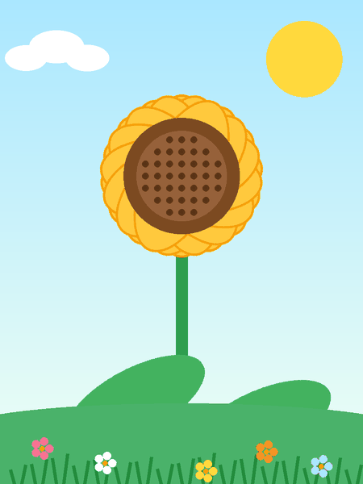

Your photo, turned into a bead pattern you can actually build
Drag the slider to compare. This is a real pattern made by this tool, not a mockup — 40 × 40 beads · 21 colors · 1,600 beads, with an exact shopping list to match.

 Photo
Pattern
Photo
Pattern
- ✓ No sign-up
- ✓ 100% in your browser — photos are never uploaded
- ✓ Free to start
1 Pick a photo
Drop an image here, or tap to choose
PNG, JPG or WebP. Simple, high-contrast pictures work best.
Examples — real output from this tool
Every pattern below was produced by this generator from the picture next to it. What you see is what you get: same colors, same codes, same counts.
Original
Pattern💡 Pet portraits and faces: use 40 beads wide or more — eyes, whiskers and fur shading need the extra detail to survive.
 Pattern
Pattern💡 Landscapes are detail-heavy. Big shapes — sky, mountains, water — still read well at 40 wide; for photo-like scenery, go wider (Pro or Studio).

Original Pattern
Pattern💡 One bold subject on a plain background is the easiest win — it stays clear even at smaller widths.
 Original
Original Pattern
Pattern💡 Logos, icons and cartoon art convert cleanly at almost any size — flat colors and bold outlines are bead-perfect.
Size guide — what a width really means
The width you set is the number of beads across. Standard midi beads are 5 mm each, so the finished size is easy to work out before you start:
| Width you set | Finished size* | Beads needed† | Detail level | Good for |
|---|---|---|---|---|
| 20 beads | ≈ 10 cm (4″) | ≈ 400 | Chunky — bold shapes only | Keychains, charms, magnets |
| 29 beads | ≈ 14.5 cm (5.7″) | 841 | Clear for simple art | Exactly one standard pegboard — coasters, desk pieces |
| 48 beads | ≈ 24 cm (9.4″) | ≈ 2,300 | Good — portraits work | Small wall art, framed gifts (Free plan max) |
| 100 beads | ≈ 50 cm (20″) | ≈ 10,000 | Photo-like detail | Large wall décor (Pro) |
| 200 beads | ≈ 100 cm (39″) | ≈ 40,000 | Maximum detail | Poster-size pieces (Studio) |
* Width across; the height follows your photo's proportions. † For a square, fully filled pattern — your exact count appears in the shopping list under every pattern you make.
💡 Rule of thumb: the smaller the pattern, the bolder your photo needs to be — one big subject and strong contrast. A busy photo that looks great at 100 beads wide will turn to mush at 20.
Step-by-step guide — from photo to finished piece
New to fuse beads? Follow these five steps and you can't go wrong.
1 Pick a good photo
Choose a picture with one clear subject, a plain background and strong contrast. Faces, pets, logos and cartoon art work best. Busy scenes with lots of tiny detail just blur together at bead size — if your photo is busy, crop in tight around the subject first.

2 Set the width
The width is how many beads across your finished piece will be; the height follows your photo automatically. More beads = more detail, but also more beads, more time and more cost. As a guide: keychains 20–30 beads wide; a coaster is one pegboard at exactly 29; desk pieces 40–60; wall pieces 80+. See the Size guide above for finished sizes.

3 Read the chart
Every square is one bead. The code printed in each cell (like P01) is that bead's color code — the same code shown in the shopping list. The bold lines every 5 beads let you count in fives instead of one by one. You can switch the grid lines and the codes on or off above your pattern.

4 Buy beads from the list
Under your pattern you'll find the shopping list: every color with its code, name and exact count, the total bead count, and how many standard 29 × 29 pegboards the piece takes. Buy about 10% extra of each color — a few beads always roll away.

5 Download, print & build
Download the pattern as a PNG and build from your screen, or print it. When printing, choose 100% / “Actual size” — “Fit to page” shrinks the grid so it no longer matches your pegboard. On the Studio plan, PDF board sheets split big patterns into one page per pegboard, with row and column numbers on every page.

🏁 Finish it: the ironing step
Once every bead is placed, cover the piece with parchment (ironing) paper and iron on medium heat, moving in slow circles, until the bead tops melt together. Let it cool flat — a heavy book on top keeps it from curling. That's the whole craft: place, iron, cool, done.
What it does
Bead Pattern Maker converts any picture into a ready-to-build fuse bead pattern — the same kind of chart you would follow on a pegboard, generated in seconds.
- Photo → pattern, automatically. Upload a picture and every pixel is matched to the closest bead color — no manual pixel-by-pixel work.
- Real 64-color bead palette. Colors come from a standard Perler / Hama palette, each with its color code and name (like H05 Red), matched by perceptual (Lab) distance so the result looks right, not just numerically close.
- Bead shopping list. You get an exact count for every color — how many beads of each code you need — plus the total bead count.
- Pegboard estimate. The tool tells you how many standard 29×29 pegboards the finished piece will take.
- Downloadable chart. Export the finished pattern as a PNG with grid lines and color codes printed in every cell, ready to build from.
- 100% private. Everything runs locally in your browser. Your photo is never uploaded to a server.
- Three plans. Free covers patterns up to 48 beads wide with the basic palette and watermarked exports. Pro and Studio raise the width limit and unlock the full palette, CSV bead lists, printable PDF board sheets and batch mode — see Pricing below for exactly what each plan includes.
How it works
- 1Pick a photo
Drop in any PNG, JPG or WebP. Simple, high-contrast pictures work best. - 2Set the width
Choose how many beads wide the finished piece should be — the height follows automatically. - 3Get your pattern
See the chart with color codes, check the per-color bead counts, and download the PNG.
Pricing
Start free. Upgrade when you need bigger patterns, the full color palette, or files you can print and build from.
Free
$0
- Patterns up to 48 beads wide
- Basic 64-color palette (Perler / Hama codes)
- Bead counts in the on-page chart
- PNG export with a small watermark
- No account, works forever
Pro
$4.99/month
- Patterns up to 120 beads wide
- Full 100-color palette (Perler + Hama + Artkal)
- Watermark-free, high-resolution PNG exports
- Bead list as a downloadable CSV — printable shopping list
- Everything in Free
Studio
$9.99/month
- Patterns up to 200 beads wide
- PDF board sheets — paginated by pegboard, with row/column coordinates for printing
- Batch generation — convert many photos in one go
- Commercial license for the patterns you create
- Everything in Pro
Keys are stored only on this device and activate the plan instantly.
Frequently asked questions
How many beads and pegboards will I need?
The shopping list under your pattern counts every color exactly, plus the total bead count and how many standard 29 × 29 pegboards the piece takes. For example, the cat pattern above needs 1,600 beads in 21 colors and 4 pegboards. Tip: buy about 10% extra of each color — a few beads always roll away.
Is my photo uploaded to a server?
No. Everything runs locally in your browser — your photo never leaves your device, nothing is stored, and there is no account. Close the tab and it's gone.
What's the difference between Free, Pro and Studio?
Free: patterns up to 48 beads wide, the basic 64-color palette, and PNG exports with a small watermark. Pro ($4.99/mo): up to 120 wide, the full 100-color palette, watermark-free exports and a downloadable CSV bead list. Studio ($9.99/mo): up to 200 wide, printable PDF board sheets, batch generation and a commercial license. See Pricing above for the full comparison.
Why does my downloaded PNG have a watermark?
Free-plan exports carry a small “Made with Bead Pattern Maker” strip along the bottom so people can find the tool. Pro and Studio exports are completely clean.
My printed grid doesn't line up with my pegboard. What went wrong?
Your printer scaled the page. Reprint at 100% / “Actual size” and turn off “Fit to page” — one printed square must equal one bead. Or simply build from the screen, or use Studio's PDF board sheets, which are paginated to match one pegboard per page with row and column numbers.
Can I use this on my phone?
Yes — it works in any modern mobile browser, and you can install it like an app (look for “Add to Home Screen”); after that it even works offline. Your photos stay on your phone, exactly like on a computer.